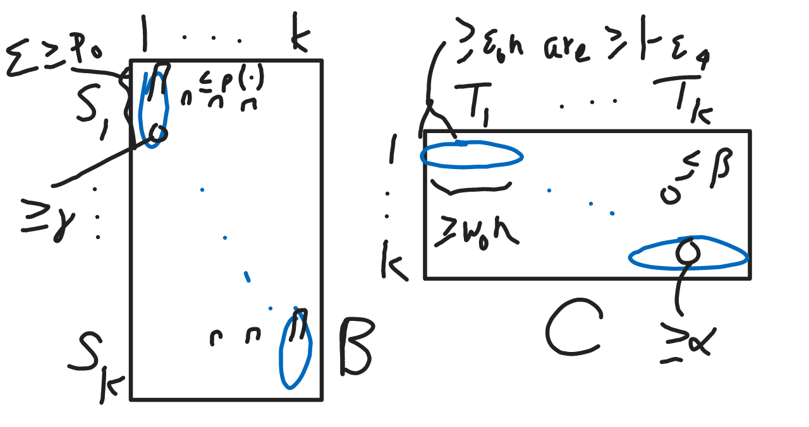
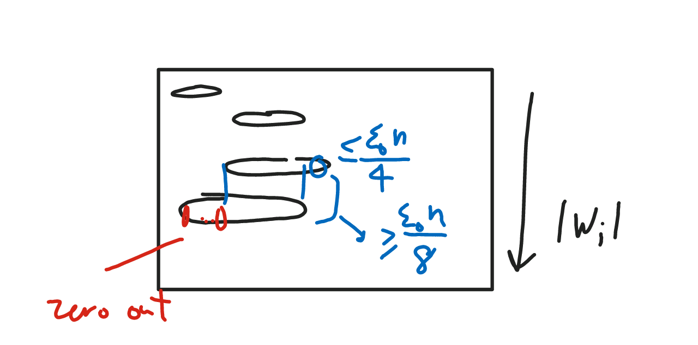
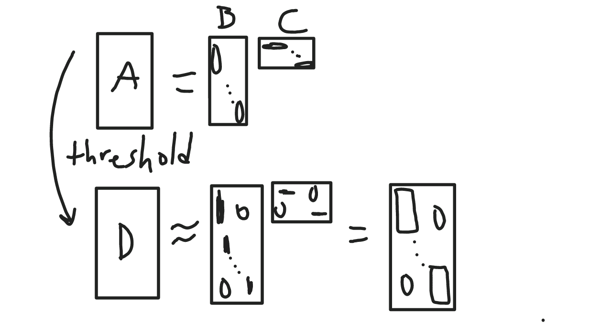
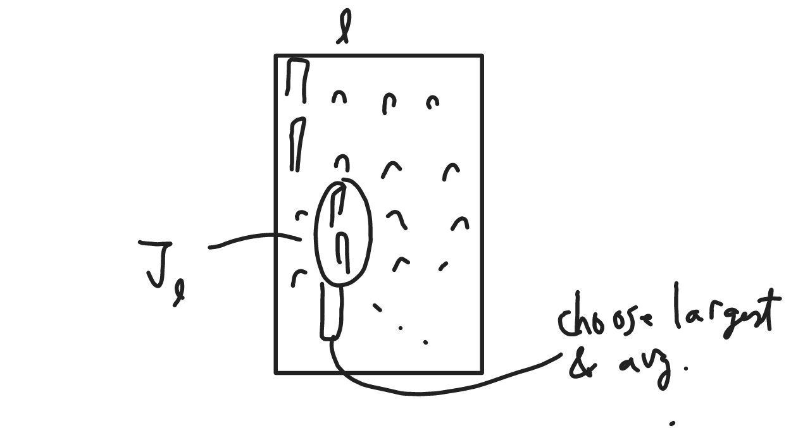

Posted: 2016-06-27
, Modified: 2016-06-27
Tags: NMF
Summary
A provable algorithm for NMF \(A=BC\) without assuming that the noise of every column of \(A\) has small noise.
Under heavy noise \[\forall T\subeq [n], |T|\ge \ep n\implies \rc{|T|}\ve{\sum_{j\in T}N_{\bullet,j}}_1\le \ep\] and in the dominant NMF model (dominant features, dominant basis vectors, nearly pure records), the TSVDNMF algorithm finds \[\ve{B_{\bullet,l}-\wt B_{\bullet, l}}_1\le \ep_0.\]
Under dominant NMF assumptions D1, D3, \(B\) is identifiable.
Remarks:
- Dominant features is a relaxation of anchor words.
- [AGKM12] (the original algorithm for NMF) requires separability, and does poorly under noise (because under noise the vertices of the simplex may no longer be the vertices of the simplex). Under error \(\ve{M-AW}_F^2\le \ep \ve{M}_F^2\), the algorithm takes time \(\exp\pf{r^2}{\ep^2}\).
- Almost pure documents is an assumption not in AGKM12.
- It only achieves constant error. (Can we do better than this?)
- Heavy noise subsumes many noise models. Note that heavy noise is a bound on \(\ve{\sum_{j\in T}N_{\bullet, j}}_1\), not \(\sum_{j\in T}\ve{N_{\bullet, j}}_1\).
Assumptions
- Heavy noise was defined above. If the covariance of noise in each column is large enough, \(\ve{\Si_j}_2=O\pf{\sqrt d}{\ep^2}\), then whp the heavy noise assumption holds.
- For example, if it is the sum of \(w\) random vectors each with covariance matrix \(O(1)\) in norm, then we need \(w=\Om\pf{d}{\ep^4}\). Ex. multinomial noise.
- Dominant NMF: See picture. Left: Dominant features (D1). (Note: sets have to be disjoint, not necessarily a partition.) Right: Dominant basis vectors (D2) and nearly pure records (D3).

Algorithm
- Apply thresholding to get \(D\).
- Initialize \(R=[d]\).
- For each row \(i\), calculate a cutoff \(\ze_i\). Set \(D_{ij}=(A_{ij}\ge \ze_i) \sqrt{\ze_i}\).
- Sort rows in ascending order and prune rows as follows. (Why? We want to prune the non-catchwords. They may be associated with significantly more documents than the catchwords.) 
Take rank-\(k\) SVD \(D^{(k)}\) of \(D\). (We hope that this is close to a block matrix with nonzeros in \(S_l\times T_l\).)
- Identify dominant basis vectors.
- \(k\)-means clustering of columns of \(D^{(k)}\).
- Apply Lloyd’s algorithm to \(D\) with this initialization.
- Let \((R_i)\) be the \(k\)-partition of \([n]\).
- Identify dominant features \(J_l\) for each basis vector by: for each \(l\), take the features \(i\) (words) with largest \(A_{il}\).
Find the basis vectors by averaging the “purest” documents in each \(J_l\). 